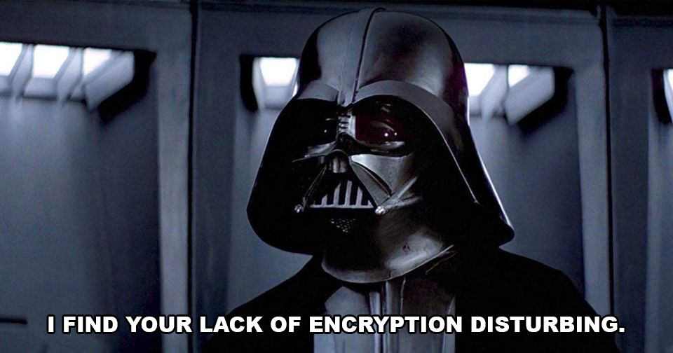

I don't post frequently on social media, and tend to neglect my phone sometimes, but these are the places where I hang out (and the best ways to communicate with me). Please note that I do prefer private/encrypted communications whenever possible. A quick hello in an email is fine, but I'll always ask to take more extensive conversations to something more private.
3AD3 9647 76F7 B42B 5F47 2F58 725C 86A6 EAA8 6C72D3CF 7126 71E3 9327 B170 8263 77E1 DAD9 F3E2 0211E9E1 5E78 A401 BEDF 3BEA 4D30 6CF1 B1C2 C596 E654D661 A465 4DEA A688 65A5 D79C E821 B702 5CB2 4914 FCED 730A C95E D9E5 07C7 452BB44B F575 7211 2FF9 6A5C 38A8 CB03 4F60 478E E70E 2FE0 7353 5D6F 2F99 7B34 03040x0417b4701a99ab30a5685c78bfdfad9695d1551615aa01591dce30122df7d1c383035bb9649eeb435e22dcc706f4ab77df2c8384852cdd2540fa63722206ab37cehttps://cryptoseb.pw/keys.txtAnother note: I am TERRIBLE at remembering to update fingerprints/keys if/when they change (Darth Vader wouldn't approve), so I am no longer going to be signing a .txt with contact details anymore. When in doubt, contact me FROM a ProtonMail account TO the email listed above.
